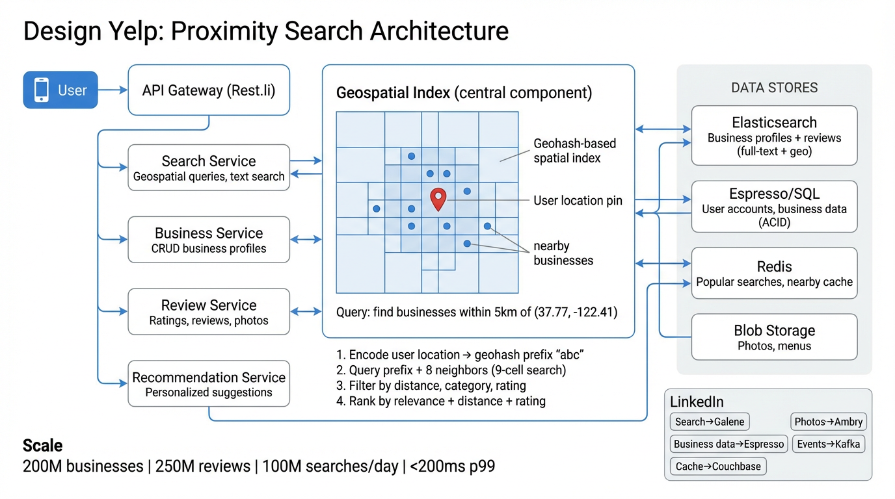

A deep dive into proximity-based business search — geospatial indexing, search ranking, review aggregation, and real-time recommendations at scale.
Yelp is a location-based business discovery platform. Users search for nearby restaurants, shops, and services by combining text queries (e.g., "sushi") with geographic proximity (e.g., within 5 km). The system must return ranked results in sub-200 ms even as the business catalog and review corpus grow to hundreds of millions of entries.
Accepts user queries (keyword + location), resolves the geohash, fans out to the geo-index and text-search shards, merges results, and applies the ranking model. Stateless — scales horizontally behind an L7 load balancer.
CRUD for business profiles: name, address, coordinates, categories, hours, photos, owner verification. Writes go to a primary DB; reads are served from read replicas and a CDN-backed photo store.
Manages user reviews and ratings. On each new review, a Kafka event triggers an async aggregation job that recomputes the business's average star rating and review count.
Generates "similar businesses" and "you might like" suggestions using collaborative filtering (user–business interactions) combined with content-based features (category, price, location).

GET /v1/search?q=sushi&lat=37.78&lng=-122.41&radius=5km. The gateway authenticates, rate-limits, and routes to Search Service.(37.78, -122.41) to geohash prefix 9q8yy (precision-5, ~4.9 km cell). It also computes the 8 neighbor cells to handle boundary cases.score = α·BM25 + β·distanceDecay(d) + γ·qualityScore(rating, reviewCount). Top-K results are returned.The heart of any proximity search system is how it indexes 2D coordinates for fast range queries. We compare three approaches and explain why Geohash is the go-to choice for most Yelp-like systems.
A geohash encodes a latitude/longitude pair into a short alphanumeric string by recursively bisecting the world into grid cells. Each additional character narrows the cell by a factor of ~32. Points that share a longer prefix are geographically closer.
Latitude 37.7749 , Longitude -122.4194
Step 1: World → 32 cells → character "9" (~5000 km)
Step 2: Cell → 32 sub-cells → character "q" (~1250 km)
Step 3: Cell → 32 sub-cells → character "8" (~156 km)
Step 4: Cell → 32 sub-cells → character "y" (~39 km)
Step 5: Cell → 32 sub-cells → character "y" (~4.9 km)
Step 6: Cell → 32 sub-cells → character "k" (~1.2 km)
Result: "9q8yyk" → San Francisco downtown
Because the geohash is a string prefix, all businesses within the same cell share the same prefix. A simple SQL query like WHERE geohash LIKE '9q8yy%' or a Redis ZRANGEBYLEX retrieves all points in the cell in O(log N + k) time.
A geohash cell has hard boundaries. A business 10 meters away could land in a different cell. The fix: always query the target cell plus its 8 neighbors.
| Property | QuadTree | Geohash | R-Tree |
|---|---|---|---|
| Structure | In-memory tree; each node splits into 4 quadrants | String-encoded grid cells; stored in any sorted index | Balanced tree of minimum bounding rectangles (MBRs) |
| Range Query | O(log N + k) — traverse relevant quadrants | O(log N + k) — prefix scan over sorted keys | O(log N + k) — traverse overlapping MBRs |
| Insert / Update | O(log N) — re-split if density exceeds threshold | O(1) compute hash + O(log N) index insert | O(log N) — may trigger node splits & rebalance |
| Storage | In-memory only; hard to persist/replicate | String column in any DB; trivially shardable | Specialized on-disk structure (PostGIS, etc.) |
| Sharding | Difficult — tree is a single structure | Easy — shard by geohash prefix | Moderate — spatial partitioning possible |
| Dynamic Density | Excellent — subdivides dense areas automatically | Fixed grid — dense and sparse areas get same cell size | Good — MBRs adapt to data distribution |
| Best For | In-memory spatial index on single node (e.g., game map) | Distributed proximity search (Yelp, Uber, GrubHub) | Complex spatial queries with polygons (GIS, PostGIS) |
| Precision (chars) | Cell Width | Cell Height | Use Case |
|---|---|---|---|
| 1 | ~5,000 km | ~5,000 km | Continent-level grouping |
| 2 | ~1,250 km | ~625 km | Country / large-region partitioning |
| 3 | ~156 km | ~156 km | State / province level shard key |
| 4 | ~39 km | ~19.5 km | Metro area — "restaurants in SF" |
| 5 | ~4.9 km | ~4.9 km | Neighborhood — default proximity search radius |
| 6 | ~1.2 km | ~0.61 km | Walking distance — "coffee near me" |
| 7 | ~153 m | ~153 m | Block level — precise delivery zones |
| 8 | ~38 m | ~19 m | Building level — indoor positioning |
Filters such as category=japanese, price=$$$, or open_now=true are applied as post-filters after geo + text matching, or as pre-filters on the inverted index (cheaper if indexed as facets).
final_score = α · text_relevance + β · distance_decay + γ · quality_score where: text_relevance = BM25(query, business_doc) distance_decay = 1 / (1 + d/d₀) # d₀ = reference distance (e.g., 1 km) quality_score = log(1 + review_count) · avg_rating / 5.0 Typical weights: α = 0.4, β = 0.35, γ = 0.25
BM25 scores how well the business document matches the query terms. Fields are weighted: name ×3, category ×2, menu ×1, reviews ×0.5. This ensures "Sushi Zen" ranks above a pizza place that happens to mention "sushi" in one review.
A hyperbolic decay function penalizes distance: a restaurant 100 m away scores ~10x higher than one 1 km away. The reference distance d₀ is tunable — in dense cities it's smaller (500 m), in suburban areas larger (2 km).
Combines average rating with review count (logarithmic to avoid runaway effect). A 4.5-star restaurant with 500 reviews scores higher than a 5.0-star place with 3 reviews. This is essentially a Bayesian average approach.
For logged-in users, add a user preference signal: boost categories the user frequently searches for, penalize price tiers they avoid. Implemented as a small additive term δ · user_affinity.
| Column | Type | Notes |
|---|---|---|
business_id |
UUID (PK) | Globally unique identifier |
name |
VARCHAR(255) | Business display name |
latitude |
DOUBLE | WGS-84 latitude |
longitude |
DOUBLE | WGS-84 longitude |
geohash |
CHAR(8) | Pre-computed; indexed for prefix queries |
category |
VARCHAR(100)[] | Array: ["Japanese", "Sushi", "Seafood"] |
price_range |
ENUM(1-4) | $ to $$$$ |
avg_rating |
DECIMAL(2,1) | Denormalized; updated async via Kafka |
review_count |
INT | Denormalized; updated async |
hours_json |
JSONB | Operating hours per day |
owner_id |
UUID (FK) | Verified business owner account |
created_at |
TIMESTAMP | Listing creation time |
| Column | Type | Notes |
|---|---|---|
review_id |
UUID (PK) | Globally unique |
business_id |
UUID (FK) | References businesses table |
user_id |
UUID (FK) | Author of the review |
rating |
SMALLINT | 1–5 stars |
text |
TEXT | Review body (max 5,000 chars) |
useful_count |
INT | "Useful" votes from other users |
created_at |
TIMESTAMP | Review submission time |
| Column | Type | Notes |
|---|---|---|
photo_id |
UUID (PK) | Globally unique |
business_id |
UUID (FK) | Associated business |
user_id |
UUID (FK) | Uploader |
url |
VARCHAR(512) | CDN URL (e.g., Ambry blob store) |
caption |
VARCHAR(255) | Optional user-provided caption |
created_at |
TIMESTAMP | Upload time |
| Column | Type | Notes |
|---|---|---|
user_id |
UUID (PK) | Globally unique |
username |
VARCHAR(50) | Unique display name |
email |
VARCHAR(255) | Login credential |
trust_score |
DECIMAL(3,2) | 0.00–1.00; used for review weight |
review_count |
INT | Total reviews written |
created_at |
TIMESTAMP | Account creation time |
business_id for locality. Eventual consistency OK.geo_point field or Redis sorted sets keyed by geohash| Yelp Component | LinkedIn Equivalent | Details |
|---|---|---|
| Full-Text Search + Geo Indexing | Galene | LinkedIn's custom search engine. Supports inverted indexes, geo_point fields, BM25 scoring, and faceted filtering. Would handle both text relevance and geospatial proximity in a single query. |
| Business & User DB (relational) | Espresso | LinkedIn's document-oriented DB with strong consistency, secondary indexes, and change capture. Business profiles, user accounts, and ownership records would live here. |
| Hot Data Cache | Couchbase | Sub-millisecond KV lookups for hot business profiles, aggregated ratings, and recent search results. Invalidated via Kafka change events from Espresso. |
| Photo / Media Storage | Ambry | LinkedIn's distributed blob store optimized for immutable media. Business photos and user avatars stored as blobs, served via CDN edge. |
| Event Streaming (review events, rating updates) | Kafka | Review submissions produce Kafka events consumed by: (1) rating aggregator, (2) search index updater, (3) recommendation pipeline, (4) anti-spam detector. |
| API Layer & Service Mesh | Rest.li + D2 | Rest.li provides the RESTful API framework; D2 handles service discovery and load balancing across Search, Business, Review, and Recommendation service instances. |
A: Use the 9-cell neighbor approach. For a given precision level, compute the target geohash cell and its 8 adjacent neighbors. Query all 9 cells, then apply a precise Haversine distance filter on the candidates to get exact results within the requested radius. This is O(9 × k) where k is the average businesses per cell.
A: Use adaptive precision. For a 500 m radius, use precision 6 (~1.2 km cells). For 5 km, use precision 5 (~4.9 km cells). For 50 km, use precision 4 (~39 km cells). The Search Service selects precision dynamically based on the requested radius, then applies the 9-cell pattern at that level. For very large radii, cascade: query precision 4 cells, then refine with Haversine.
A: QuadTrees are excellent for in-memory single-node spatial queries but are hard to distribute. They can't be sharded by prefix, don't map to a simple string key, and require the entire tree in memory. Geohash strings are trivially shardable (partition by first 2 characters = 1,024 shards), work with any sorted index (Redis, Cassandra, Elasticsearch), and support variable precision via truncation. For a distributed proximity search system, geohash wins on operational simplicity.
A: Use change data capture (CDC) via Kafka. Every write to the business DB (Espresso) emits a change event. A Kafka consumer updates the Galene search index asynchronously. The lag is typically < 2 seconds. For critical fields (e.g., business closure), a synchronous dual-write to both DB and index can be used, with a reconciliation job to fix any drift.
A: Multi-layered defense: (1) Review velocity detection — flag businesses receiving 10x their normal review rate. (2) Reviewer trust scoring — new accounts with zero history have lower weight. (3) NLP analysis — detect template reviews, sentiment inconsistency, and copy-paste patterns. (4) Behavioral signals — check-in verification, session duration, and geographic plausibility (reviewing a Tokyo restaurant from a US IP in 5 seconds is suspicious).
A: Shard by geohash prefix (first 2–3 characters). This co-locates geographically nearby businesses on the same shard, making proximity queries hit fewer shards. For reviews, shard by business_id so all reviews for a business are on one shard. Cross-shard joins are avoided by denormalizing avg_rating and review_count onto the business row.
A: Hot-shard mitigation: (1) Read replicas — most queries are reads; replicate hot shards 3–5x. (2) Caching — popular area search results are cached in Couchbase with short TTLs (30s–2min). (3) Sub-sharding — split a hot geohash prefix into finer-grained sub-shards (e.g., "dr5ru" → "dr5ru0" through "dr5ruz"). (4) Separate read path — serve search queries entirely from the Galene index, not the primary DB.